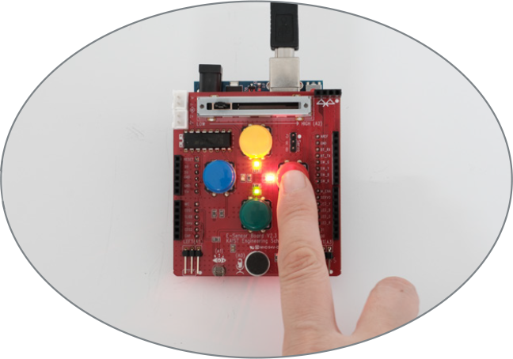

2. 초록, 노랑, 빨간 버튼을 클릭하면 해당 색의 LED가 켜지고, 파란 버튼을 누르면 LED가 모두 꺼지도록 프로그램을 작성해 보자.

조건
초록 버튼 클릭하면 초록 LED 켜짐.
노랑 버튼 클릭하면 노랑 LED 켜짐.
빨간 버튼 클릭하면 빨간 LED 켜짐.
파란 버튼 클릭하면 LED 전체 꺼짐.
| LED | 버튼 | |
|---|---|---|
| 빨간 | 2 | 8 |
| 초록 | 3 | 11 |
| 파란 | 4 | 9 |
| 노랑 | 5 | 10 |
아래 블록을 참고하여 프로그램을 작성해 보자.
화면의 크기를 좌우로 조절하면 블록을 크게 볼 수 있어요.
이전
다음